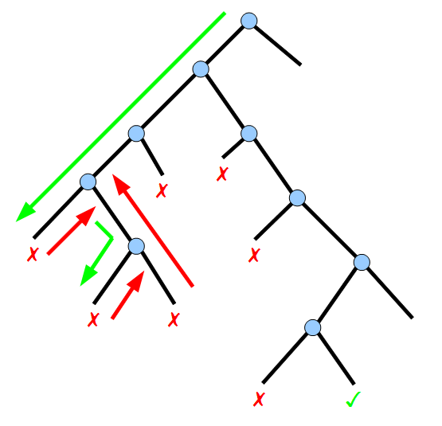

回溯法（backtracking）是暴力搜索法中的一种。回溯法采用试错的思想，它尝试分步解决问题，当它发现现有的分步不能得到解时，将取消上一步的计算，用其它的可能的分步，再次尝试求解。在最坏的情况下，回溯法会导致指数时间复杂度，例如 t=O(n!) 或 t=O(2^n)，即枚举的时间复杂度。回溯法的代码框架如下：
1 | result = [] |
回溯法，本质是决策树的遍历过程（root代表初始状态，其余每个节点代表一个选择），通过for循环里面的递归来实现。

一. 子集、组合、排列问题
1. 子集问题
1 | class Solution(object): |
1 | class Solution(object): |
主要思路：将backtracking过程想象成决策树，没有重复子集，即要求决策树每层不得有同值元素；排序，让相同的元素聚集，是去重的有效操作。
2. 组合问题：Leetcode 77. Combinations、Leetcode 47. Permutations II
1 | class Solution(object): |
3. 排列问题：Leetcode 46. Permutations
1 | class Solution(object): |
二. 其他
1. N皇后问题：Leetcode 51. N-Queens
1 | class Solution(object): |
主要思路：在(n,n)的棋盘中放入n个皇后，每行有且仅有一个皇后；故回溯算法应逐行，对每行的元素进行枚举判断。
2. 数独问题：Leetcode 37. Sudoku Solver
1 | class Solution(object): |
主要思路：回溯法在二维数据上的应用，基本涉及坐标的步进和有效性验证；找到结果后，通过标志变量，立刻结束迭代。
1 | def 2D_backtracking(): |
其他用例：
Leetcode 17. Letter Combinations of a Phone Number
Leetcode 22. Generate Parentheses
Leetcode 39. Combination Sum
Leetcode 93. Restore IP Addresses
Leetcode 131. Palindrome Partitioning